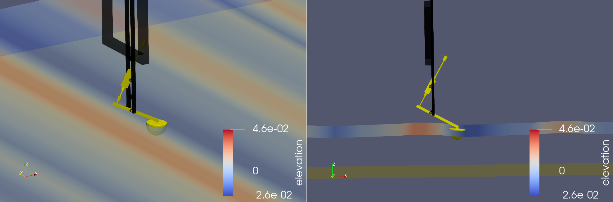

Overview¶
WEC-Sim (Wave Energy Converter SIMulator) is an open-source code for simulating wave energy converters. The code is developed in MATLAB/SIMULINK using the multi-body dynamics solver Simscape Multibody. WEC-Sim has the ability to model devices that are comprised of hydrodynamic bodies, joints and constraints, power take-of systems, and mooring systems. Simulations are performed in the time-domain by solving the governing wave energy converter equations of motion in the 6 rigid Cartesian degrees-of-freedom, plus any number of user-defined modes. As long as boundary element method data is available, a body may also move in any number of generalized body modes such as shear, torsion, or bending.

At a high level, the only external input that WEC-Sim requires is boundary element method data from codes such as WAMIT, AQWA, Capytaine, HAMS, etc. The boundary element method represents the hydrodynamic response of the device for a given wave frequency. WEC-Sim uses this data to simulate devices in the time-domain where they can be better coupled with controls, power take-off systems, and other external bodies and forcings. WEC-Sim outputs the motions, forces and power absorbed or lost in individual bodies, joints and PTOs. Output is readily available in MATLAB for custom post-processing or coupling with external tools such as the WecOptTool.
Several interfaces with Simulink are included that allow users to couple WEC-Sim with a wide variety of other models and scripts relevant to their devices. Complex power take-off systems and advanced control algorithms are just two examples of the advanced tools that can be coupled with WEC-Sim.
{kind=link}
{kind=link}
Together with PTO and control systems, WEC-Sim is able to model a wide variety of marine devices. The WEC-Sim Applications repository contains a wide variety of scenarios that WEC-Sim can model. This repository includes both demonstrations of WEC-Sim’s advanced features and applications of WEC-Sim to unique devices.
WEC-Sim’s capabilities include the ability to model both nonlinear hydrodynamic effects (Froude-Krylov forces and hydrostatic stiffness) and nonhydrodynamic bodies, body-to-body interactions, mooring systems, passive yawing. WEC-Sim contains numerous numerical options and ability to perform highly customizable batch simulations. WEC-Sim can take in data from a variety of boundary element method codes using its BEMIO (BEM-in/out) functionality and can output paraview files for visualization. Some of its advanced features are highlighted in the figures below.
| Advanced Features Demonstration | |
|---|---|
 Nonlinear hydrodynamics
Nonlinear hydrodynamics |
 Various numerical options
Various numerical options |
 Body-to-body interactions
Body-to-body interactions |
Passive yaw |
| Multiple case run: elevation |  Multiple case run: power matrix
Multiple case run: power matrix |
{kind=link}
{kind=link}
WEC-Sim can accurately model a wide variety of marine renewable energy and offshore devices due to its advanced features and capabilities, including those highlighted above. The Paraview figures below highlight a small sample of devices that WEC-Sim has successfully modeled in the past.
| Sample of devices that have been with WEC-Sim | |
|---|---|
 Reference Model 3
Reference Model 3 |
 Bottom-fixed Oscillating Surge WEC (OSWEC)
Bottom-fixed Oscillating Surge WEC (OSWEC) |
| Hemisphere in Free Decay |  Ellipsoid
Ellipsoid |
| Wigley Ship Hull | Barge with Four Flexible Body Modes |
|  Wave Energy Converter Control Competition (WECCCOMP) Wavestar Device | OC6 Phase I DeepCwind Floating Semisubmersible |
{kind=link}